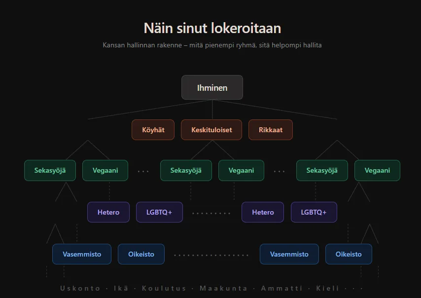

Meidän pitäisi alkaa ajattelemaan miksi meidät tavalliset kansalaiset halutaan laittaa omiin lokeroihin, mikä taho hyötyy siitä että vasemmisto taistelee oikeistoa vastaan, mikä taho hyötyy kun lihaa syövät väittelevät vegaanien kanssa? Meidät ihmiset halutaan laittaa pieniin ryhmiin ja vielä jakaa sen perusteella omiin pienempiin ryhmiin jotta meitä voidaan kontrolloida, on helpompi hallita kansalaisia jos me laitetaan ne toisiaan vastaan väittelemään netissä sekä kaduilla asioista joihin he eivät kuitenkaan koskaan pysty vaikuttamaan.
Mieti hetki omaa arkeasi, kuinka monta kertaa viimeisen viikon aikana olet ottanut kantaa johonkin asiaan netissä, kuinka monta kertaa olet tuntenut ärtymystä jonkun vieraan ihmisen mielipiteestä, kuinka monta kertaa olet selittänyt jollekin tuntemattomalle miksi hänen ajattelunsa on väärää? Ja ennen kaikkea, muuttiko se yhtään mitään? Ei muuttanut, mutta se vei sinun aikaasi, energiaasi ja mielenrauhaasi ja se on täsmälleen se mitä haluttiin tapahtuvan.Kuka tästä oikeasti hyötyy
Jos lihaa syövä hetero laitetaan homoseksuaalin vegaanin kanssa samaan tilaan siitä alkaa väittely melko varmasti, mutta jos me poistettaisiin vaikutteet eli media tästä kuviosta kokonaan alkaisivat kansalaiset huomaamaan kuinka yhteiskunta kontrolloi ihmisiä ja heidän ajatuksiaan. Se mikä tässä on pahinta on sosiaalinen media joka tuo koko maailman samalle viivalle jolloin voidaan kontrolloida suurempaa kuvaa, ennen some-aikaa sinä väittelit lähinnä naapurisi tai työkaverin kanssa pienistä asioista ja se jäi siihen, nyt sinä väittelet samanaikaisesti miljoonien ihmisten kanssa kaikesta mahdollisesta ympäri vuorokauden ja jokainen tuo väittely jättää jäljen sinun mielenterveyteesi ja kuluttaa sinua tavalla jota et edes huomaa.Uutismediat tarvitsevat sinun vihasi koska viha klikkaa ja klikit maksavat, sosiaalinen media tarvitsee sinun raivosi koska raivo pitää sinut sovelluksessa pidempään ja pidempään pysyminen tarkoittaa enemmän mainostuloja, poliitikot tarvitsevat sinun pelkosi koska pelkäävä ihminen äänestää ja äänestäminen pitää heidät vallassa, nämä kaikki tahot hyötyvät siitä että sinä olet lokeroitunut jonnekin ja taistellaan innokkaasti toista lokeroa vastaan. Sinä et hyödy tästä yhtään mitään.
Ja tässä on se asia jota ei yleensä sanota ääneen, tämä ei vaadi mitään salaliittoa tai takahuoneen suunnitelmaa, jokainen näistä tahoista optimoi vain omaa etuaan ja lopputulos on silti sama kuin tämä olisi suunniteltu. Facebookin omat sisäiset tutkimukset vuodelta 2021, jotka vuotivat julkisuuteen Frances Haugenin kautta, osoittivat että algoritmi tiesivät täsmälleen mitä tekivät, viha ja pelko tuottavat enemmän sitoutumista kuin mikään muu ja sitoutuminen tuottaa rahaa, eli sinun raivo on kirjaimellisesti heidän liiketoimintamallinsa.Miten lokerointi toimii sinuun
Tässä on se mekanismi jota harvoin selitetään auki, lokerointi ei tapahdu kerralla eikä se tapahdu väkisin, se tapahtuu hitaasti ja sinut suostutellaan siihen vapaaehtoisesti. Se alkaa siitä että löydät ihmisiä joiden kanssa olet samaa mieltä jostakin asiasta, se tuntuu hyvältä koska ihminen on laumaeläin ja haluaa kuulua johonkin, sitten alat seuraamaan näitä ihmisiä lisää ja algoritmi huomaa tämän ja alkaa syöttämään sinulle lisää samankaltaista sisältöä, ja pikkuhiljaa sinä näet vain ihmisiä jotka vahvistavat sen mitä jo uskot ja ne joilla on eri mielipide alkaa tuntua viholliselta.Tätä kutsutaan kaikukammioksi ja siinä ei ole mitään luonnollista, se on rakennettu sinuun tarkoituksella koska ihminen joka on vahvasti lokeroitunut on helpompi hallita, helpompi pelotella, helpompi saada äänestämään tietyllä tavalla ja helpompi saada ostamaan tiettyjä tuotteita. Sinä olet tuote siinä ekosysteemissä et käyttäjä, ja mitä vahvemmin olet lokeroitunut sitä arvokkaampi tuote sinä olet jollekin muulle.
Psykologit kutsuvat tätä ryhmäpolarisaatioksi ja se on tutkittu ilmiö jo 1960-luvulta lähtien, kun samanhenkiset ihmiset kokoontuvat yhteen he eivät jää siihen mielipiteeseen josta aloittivat vaan ajautuvat ajan myötä äärimmäisempiin kantoihin, ja some tekee tästä prosessista turboahdetun version jossa se tapahtuu viikoissa eikä vuosissa. Se ihminen joka kolme vuotta sitten oli maltillinen jonkin asian suhteen on tänään valmis katkaisemaan välit omaan perheeseensä saman asian takia, ja hän uskoo tekevänsä sen oman vakaumuksensa takia vaikka todellisuudessa algoritmi on muokannut häntä askel askeleelta.Seuraavan kerran kun alat väittelemään
 Seuraavan kerran kun alat väittelemään jonkun kanssa internetissä jostakin asiasta kysy itseltäsi kuka tästä hyötyy, koska sinä et hyödy siitä että väittelet jonkun tuntemattoman kanssa eikä varsinkaan se joka väittelee kanssasi, te kinastelette jostakin asiasta mihin ette kumpikaan pysty koskaan vaikuttamaan, eli tuhlaatte aikaanne sekä energiaanne.
Seuraavan kerran kun alat väittelemään jonkun kanssa internetissä jostakin asiasta kysy itseltäsi kuka tästä hyötyy, koska sinä et hyödy siitä että väittelet jonkun tuntemattoman kanssa eikä varsinkaan se joka väittelee kanssasi, te kinastelette jostakin asiasta mihin ette kumpikaan pysty koskaan vaikuttamaan, eli tuhlaatte aikaanne sekä energiaanne.
Kysy itseltäsi myös tämä, oletko sinä itse valinnut nämä mielipiteesi vai ovatko ne rakennettu sinuun toistamalla samaa viestiä tarpeeksi monta kertaa tarpeeksi monesta suunnasta? Tämä on epämukava kysymys mutta se on rehellinen kysymys, koska jos oikeasti mietit milloin sinusta tuli se ihminen joka taistelee kyseisen asian puolesta niin usein huomaat että se ei ollut tietoinen päätös vaan se syntyi kuluttamalla tietynlaista mediaa tietyn ajan verran.
Se vapaus joka sinulla on oikeasti on vapaus päättää mihin käytät aikaasi ja energiaasi, ja jos käytät sen johonkin johon et pysty vaikuttamaan olet luovuttanut sen vapauden jollekin toiselle, se taho käyttää sinua omiin tarkoituksiinsa samalla kun sinä luulet taistelevasi tärkeän asian puolesta. Pysähdy, mieti mihin lokeroon sinut on laitettu ja ennen kaikkea mieti kuka sen lokeron rakensi ja kenen tarpeita se palvelee, koska se ei ole palvellut sinun tarpeitasi koskaan.Mitä voit tehdä tänään
Tässä ei vaadita mitään suurta vallankumousta, riittää muutama konkreettinen asia. Lopeta uutisten seuraaminen päivittäin, uutiset eivät muutu paremmiksi jos seuraat niitä joka tunti mutta mielesi muuttuu huonommaksi koska jokainen negatiivinen otsikko jättää jäljen. Lopeta väittely netissä kokonaan, se ei ole mielipiteen vapaus se on oman energian lahjoittaminen jollekin joka ei koskaan muuta kantaansa ja joka on täsmälleen yhtä lokeroitunut kuin sinä. Mieti ketkä ovat ne ihmiset joiden kanssa oikeasti haluat viettää aikaa ja vie se aika heidän kanssaan eikä tuntemattomien vieraiden kanssa netissä.Ja ennen kaikkea kysy itseltäsi yksi kysymys joka viikko, palveleeko tämä toiminta minua vai jotakuta muuta?
[caption id="attachment_163" align="alignnone" width="854"]

Jokainen lokero voidaan jakaa vielä pienemmäksi. Mitä pienempi ryhmä, sitä helpompi hallita. Sinä et väittele vakaumuksesi puolesta – väittelet sen lokerosi puolesta johon sinut on laitettu.[/caption]